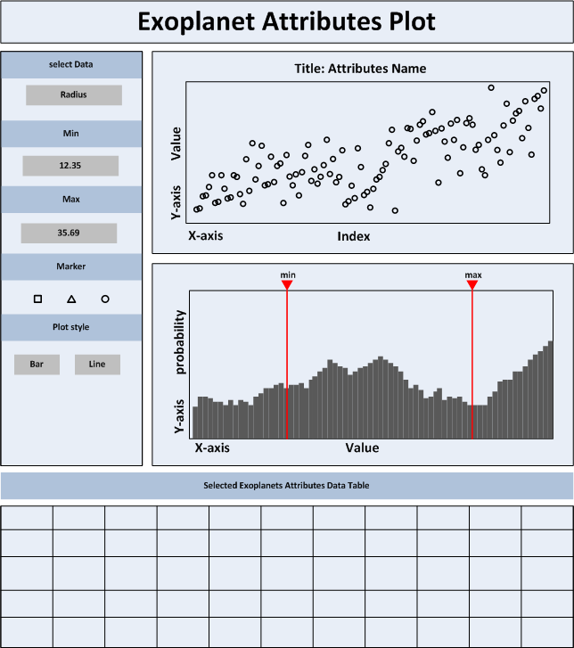

Student Name: Chen Zhu Student ID: 10061098252
Introduction:The objective of this visualisation is to provide users with a quick and convenient way to look through the exoplanets dataset from the overall view, partial view and item view by a probability distribution plot, a scatter plot and a table view individually. The main screen of this design can be divided into four areas. The sketche of this design is shown as below:
Configuration area. Configuration area is on the left side of the screen. Users can select the interesting attribute from a drop-down list, pick up the sub-collection of exoplanets dataset by inputting the range of the value, and configure some plot features in this area.
Scatter plot area. After picking up a specific attribute, a scatter plot of this attribute will be generated in the right top of the screen. Every marker represents an exoplanet and the shape of the marker can be changed by clicking the marker selecting radio buttons.
Probability distribution plot area. The overall evaluation of specific attribute can be shown in by a probability distribution plot in the right middle of the screen. The Y-axis represents the probability of the attributes’ value and the X-axis represents the probable value of the attribute. There are two red vertical bars in this plot, which are used as the selection tools to select the exoplanets. Only exoplanets, whose attribute’s value is between the two vertical bars, can be displayed in the above scatter plot. The position of the two vertical bars can be set in the configuration area.
Selected Exoplanet table view area. In order to show all the details of the selected exoplanets, a table view is applied on the bottom of the screen. In this table view all details of the selected exoplanets will be listed. Every row of this table represents a specific exoplanet with all of the attributes’ values.
This visualisation can provide the overall view of the exoplanet dataset, as well as the specific partial view of the dataset at the same time. Form the probability distribution plot, the users can easily get the overall evaluation of specific attributes about all exoplanets. For example, users can figure out what range of the value the most probable value of the exoplanet should be, and this kind of knowledge might help the researcher evaluate the new stars in the space. In another part of this visualisation, the users can easily get the precise value of their interesting exoplanets from the scatter plot and the exoplanet table on the bottom. For instance, for the researcher who wants to go through some specific exoplanets, whose attributes’ values are in a specific range, what he needs to do just is adjusting the two vertical bars in the probability distribution plot, then a scatter plot on this attribute of the selected exoplanets will be created quickly. All details of this sub-collection exoplanets are shown in the detail table on the bottom of the design as well.
This visualisation design can visualize the most part data of the exoplanets dataset. However, it is not suitable to visualize the string attributes, such as the identifier of plane, discover method and the planet detection status List, so these attributes will be ignored in this design. The data which will be applied in this desgin are shown in the following table.
| No. | Attribute | Suitable for visualisation |
|---|---|---|
| 1 | Primary identifier of planet | No |
| 2 | Binary flag | Yes |
| 3 | Planetary mass | Yes |
| 4 | Radius | Yes |
| 5 | Period | Yes |
| 6 | Semi-major axis | Yes |
| 7 | Eccentricity | Yes |
| 8 | Periastron | Yes |
| 9 | Longitude | Yes |
| 10 | Ascending node | Yes |
| 11 | Inclination | Yes |
| 12 | Surface or equilibrium temperature | Yes |
| 13 | Age [Gyr] | Yes |
| 14 | Discovery method | No |
| 15 | Discovery year | Yes |
| 16 | Last updated | Yes |
| 17 | Right ascension | Yes |
| 18 | Declination | Yes |
| 19 | Distance from Sun | Yes |
| 20 | Host star mass | Yes |
| 21 | Host star radius | Yes |
| 22 | Host star metallicity | Yes |
| 23 | Host star temperature/td> | Yes |
| 24 | Host star age | Yes |
| 25 | Planet Detection Status List | No |